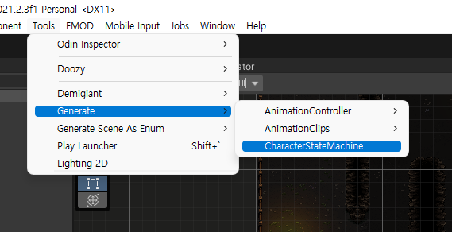
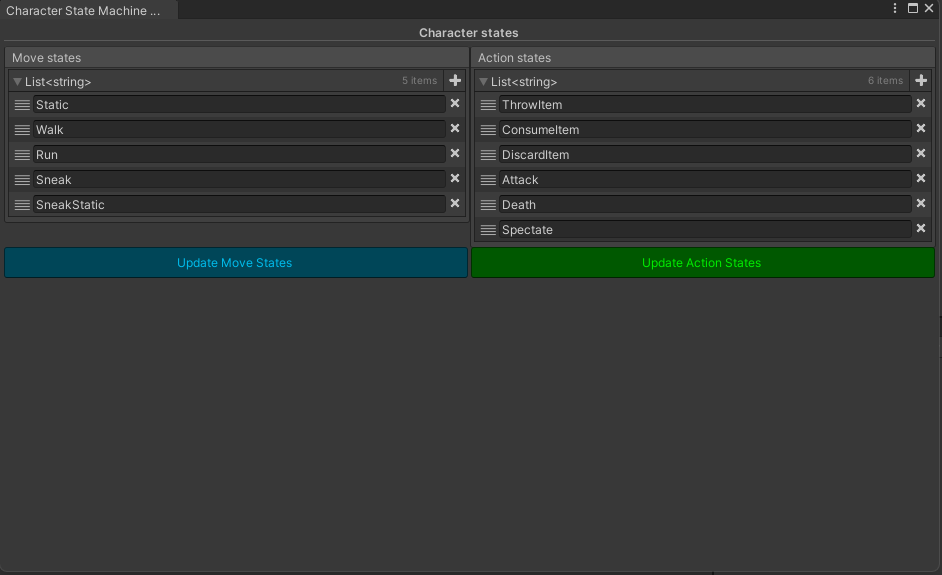
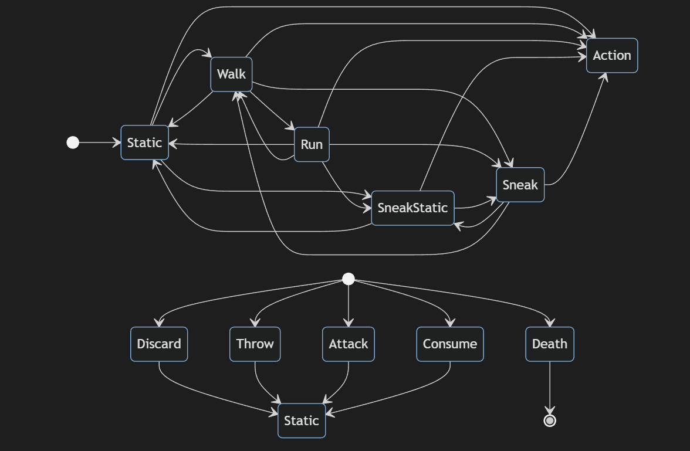

Character state machine
What is FSM?
For more information about FSM, check this video and this page
Why we choose the FSM pattern?
The character class is so huge and do a lot of works so when the error is occurred, we can't find the any clues to fix it.
But FSM pattern can separate the character features. Therefore, we can easy to debug the error and find it.
We can understand the character's behavior each character states.
How to create character state?
You have to open the character state machine window (You can open
Tools/Generate/CharacterStateMachine). You can see the this Window. 
How does it work?
Read the character move and action types that provide by designer(you). Find the character state script If cannot find the script, create a new character script. If find the unnecessary the script, delete it. Finally, add character states dictionary and states getter to character state factory script.
Migration guide
If you want to change the CharacterStateType(Scripts\PlayerCharacter\FSM\Type\.cs) script location, you have to fix the CharacterStateTypeFormat.FileFormat namespace and MOVE_STATE_TYPE_FILE_PATH. ACTION_STATE_TYPE_FILE_PATH in Editor\Windows\CharacterStateMachineWindow\CharacterStateMachineWindow.cs.
Same the CharacterState(Scripts\PlayerCharacter\FSM\States\MoveStates(ActionStates)\.cs) you have to fix the CharacterStateClassFormat.FileFormat namespace, MOVE_STATES_FOLDER_PATH and Action_STATES_FOLDER_PATH. Same the CharacterStateFactory(Scripts\PlayerCharacter\FSM\States\CharacterStateFactory.cs) class you have to fix the CharacterStateFactoryFormat.FileFormat namespace and CHARACTER_STATE_FACTORY_PATH.
Character states
